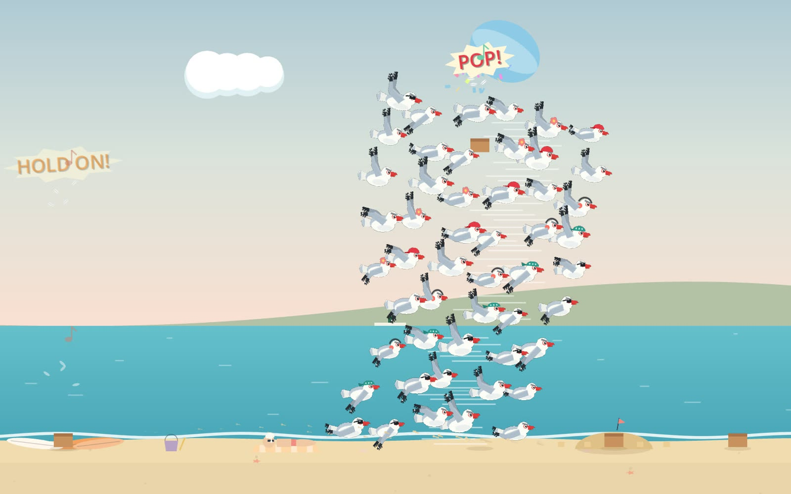
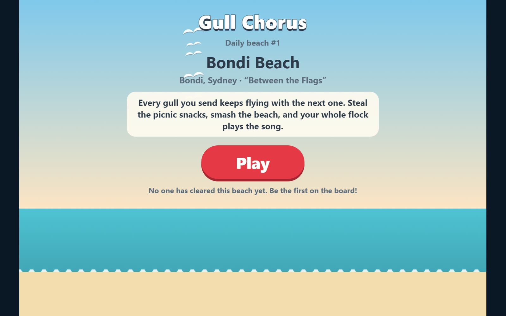
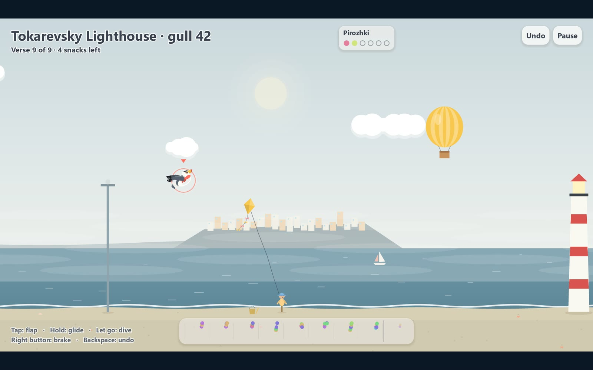
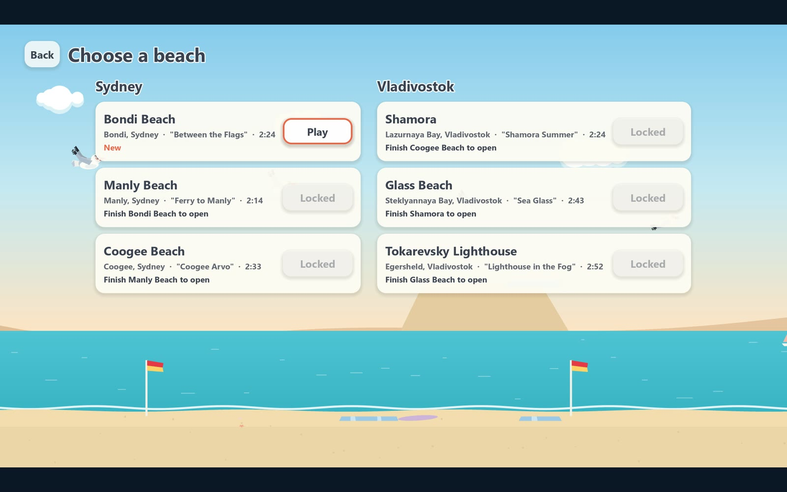
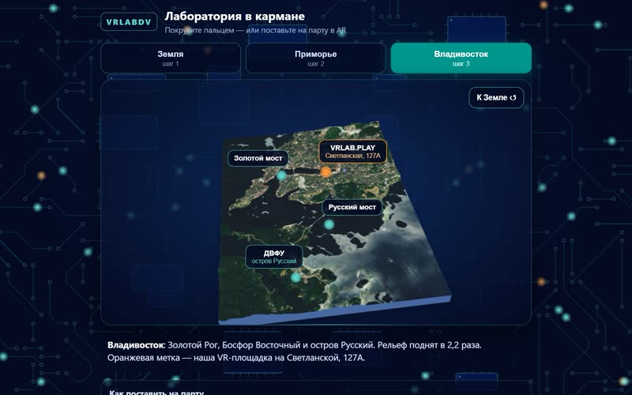

New platform In progress
A game inside a Reddit post

What if you did not have to leave the feed to play? We put Gull Chorus, our seagull flock game, inside a Reddit post: one post is one beach, with a leaderboard under it.
Reddit lets developers build apps that live inside posts. Most are small web toys. We wanted to know whether a whole Godot game could sit there, load fast enough that nobody scrolls past, and use what a post already has: a community, a comment thread, a new one every day.
How a post becomes a game
In the feed the post is a light page with no game engine in it: the colours of today's beach, the top five on the board, and Play. Press it and the post opens full screen and starts the real game.
Every day at nine in the morning Sydney time the app posts the next beach. The leaderboard belongs to the post: most stars first, then fewest gulls. You can play without an account. Log in and you get a place on the board and a save that follows you between devices. "Comment my best" posts your score to the thread, once, and only when you tap it.
What got in the way
- Reddit's pages forbid inline scripts, so the game needed its own loading page and a single-threaded build.
- The game may talk only to its own small server, and each request is capped in size and time. The whole flock's recorded steering has to fit in one save.
- The engine files ship compressed and the page unpacks them as they arrive. On the live site Reddit already unpacks them for you, which we found out when the game tried to unpack them twice.
- Every change goes through review again, a day or two each time.
Where it is
It plays on Reddit in our test community, saves and all. The first load takes about twelve seconds, about two and a half after that. The version for everyone is in Reddit's review as we write this. When it passes, r/GullChorus opens with a beach a day.
Twelve seconds is too long for a feed. That is the next thing to fix.
Pictures






Talk about this one
Questions, ideas, “you should try this instead”: the thread for this experiment is open to anyone.
The forum runs on GitHub Discussions. Reading is open to all; posting needs a free GitHub account.
More experiments
 Robots · Tools
Eva and Adam, taken apart
Two humanoid robots live in our workshop. We write the software that makes one of them see, listen and pull faces, and we built a 3D guide that takes both of them apart screw by screw.
In progress
Robots · Tools
Eva and Adam, taken apart
Two humanoid robots live in our workshop. We write the software that makes one of them see, listen and pull faces, and we built a 3D guide that takes both of them apart screw by screw.
In progress
 Art direction
One wheel, four tables
In Souls & Estates one mouse wheel now takes you from a single peasant yard to a table map of central Russia, through four dioramas of the same place.
You can try it
Art direction
One wheel, four tables
In Souls & Estates one mouse wheel now takes you from a single peasant yard to a table map of central Russia, through four dioramas of the same place.
You can try it

AR A lab in your pocket A web page that puts a relief model of the Earth, then our region, then our city on the desk in front of you, through your phone's camera. No app to install. You can try it